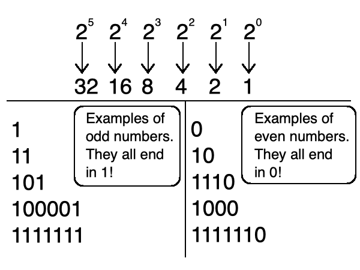
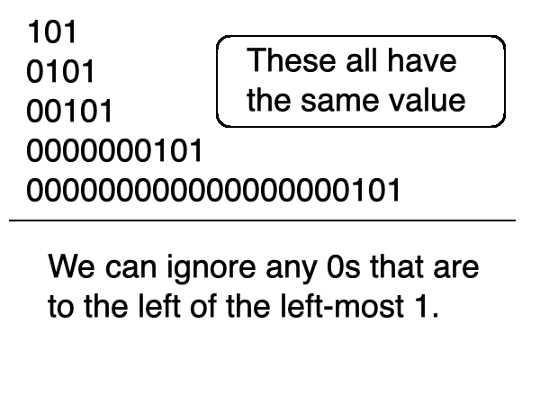
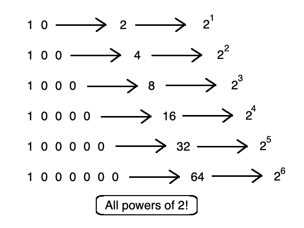
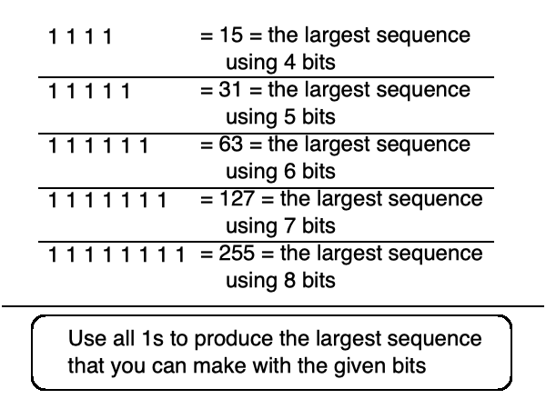
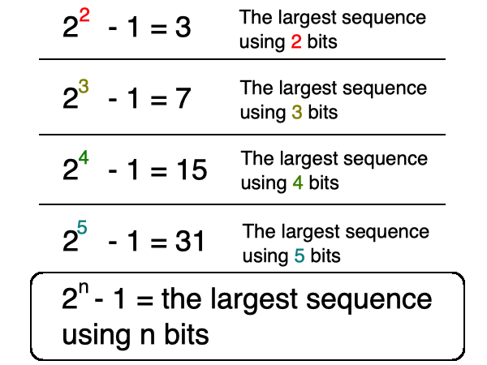

you smart good
Programming Concepts
Binary and Base-2 expanded
Now that we have started to understand Binary, let's go over a few concepts that will help further your understanding.
When we look at the powers of 2, do you notice a difference between the right-most column when compared to every other column?
That's right, 20 equals 1, which is an odd number!
What does this mean though?
Well, since this is the only power of 2 that is an odd number, this means that any Base-2 sequence that has a 1 in the right-most column is an odd number, regardless of the rest of the sequence.

Let's take a look a different concept.
We've established that when a column has a 0 in it, that specific column will hold a value of 0.
So let's say we have a sequence of 0 0 1.
We know to start from the right-most column to determine the value. Since the one's column is the only column with a value that is not 0, we can stop at this column.
The value of 1 can be written as 1 or 0 0 1 or even 0 0 0 0 0 0 1.

Here's another one.
1 0 is 2.
1 0 0 is 4.
1 0 0 0 is 8.
Notice how all of these are powers of 2.
This means that any time you have a single 1 followed by 0s, the sequence will equal a power of 2!

Think we're done? Not yet!
Let's say we're working with only 4 bits.
What would be the largest number using 4 bits?
Since we only have two symbols(1 and 0) and 1 is always larger than 0, we can use 1 in each of the bits to fit the largest value that we can get.
So the largest sequence we can make using 4 bits(or a nibble, remember?) is 1 1 1 1, or 15.

Look at the largest sequences above. Do you see how all of those numbers are almost powers of 2?
They are all powers of 2 minus 1.
So let's say we are trying to find the largest sequence that we can make using 9 bits.
Let's use the equation: 2n - 1
If we are trying to find the largest sequence using 9 bits, we can replace the n in the equation with 9.
So to find the largest sequence using 9 bits, we can use the equation 2n - 1. (You can use a calculator. I won't tell anyone.)
